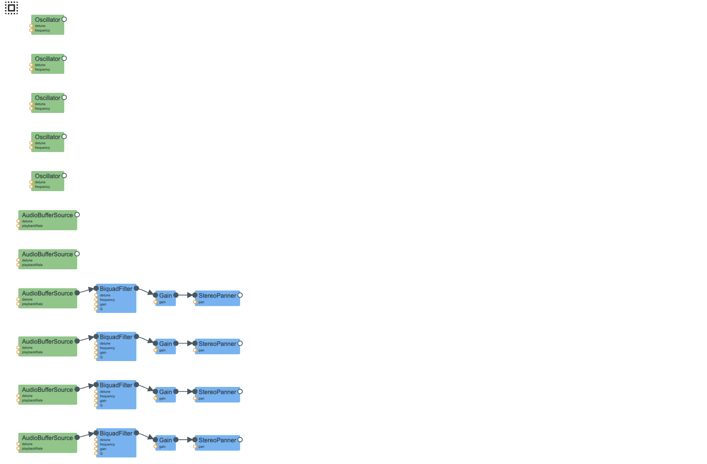

my goal was to recreate the sound of making popcorn in the microwave. i did this in a few parts: 1) the background noise of the microwave, 2) big popping noises, and 3) smaller crackly pops.
using the WebAudio visualizer extension:

i did some research and found out that american microwaves hum at a frequency of 60Hz, which is now the most random fact i know. i modeled the sound of a microwave with four sine wave oscillators at 60, 120, 180, and 300 Hz (the fundamental and its harmonics), with each harmonic quieter than the last. i also added a second 60 Hz oscillator detuned by half a hertz, which adds a more realistic layer.
on top of that i added two noise sources: a narrow bandpass noise centered at 120 Hz for the buzz, and a highpass noise above 2000 Hz for the fan and electronics hiss. both are looped buffer sources with filtered white noise.
// fundamental + harmonics
const freqs = [60, 120, 180, 300];
const gains = [0.18, 0.10, 0.06, 0.03];
freqs.forEach((f, i) => {
const osc = audioCtx.createOscillator();
osc.type = 'sine';
osc.frequency.value = f;
const g = audioCtx.createGain();
g.gain.value = gains[i];
osc.connect(g).connect(audioCtx.destination);
osc.start();
});
// second layer
const osc2 = audioCtx.createOscillator();
osc2.frequency.value = 60.5;
// ...
// buzz
const bp = audioCtx.createBiquadFilter();
bp.type = 'bandpass';
bp.frequency.value = 120;
bp.Q.value = 8;
for the pops i used two layers: small crackles and big pops. both are built from white noise buffers rather than oscillators, because a kernel popping is more of a percussive noise burst than a pitched tone.
small crackles are short noise bursts (40–140ms) run through a bandpass filter centered somewhere between 300–1100 Hz. they have a very fast attack (about 3ms) and a quick exponential decay. they fire in small bursts of 1–4 at a time, with a new burst every 100–450ms. this is spread across three simultaneous scheduling streams so it makes the constant crackling sound.
big pops have two components fired simultaneously: a low bandpass thump (100–350 Hz, high Q) for the body of the pop, and a highpass transient above 1200 Hz for the sharp crack at the moment of impact. big pops fire every 1–5 seconds with occasional double-pops!
function createSmallCrackle(time) {
const dur = 0.04 + Math.random() * 0.1;
const src = audioCtx.createBufferSource();
src.buffer = makeNoiseBuffer(dur + 0.15);
const bp = audioCtx.createBiquadFilter();
bp.type = 'bandpass';
bp.frequency.value = 300 + Math.random() * 800;
bp.Q.value = 0.5 + Math.random() * 1.2;
const gain = audioCtx.createGain();
gain.gain.setValueAtTime(0, time);
gain.gain.linearRampToValueAtTime(0.8 + Math.random() * 0.6, time + 0.003);
gain.gain.exponentialRampToValueAtTime(0.001, time + dur);
// ...
}
function createBigPop(time) {
// low thump body
const bp = audioCtx.createBiquadFilter();
bp.type = 'bandpass';
bp.frequency.value = 100 + Math.random() * 250;
bp.Q.value = 3;
// ...
// high crack transient
const hp = audioCtx.createBiquadFilter();
hp.type = 'highpass';
hp.frequency.value = 1200 + Math.random() * 1000;
// ...
}
thanks for reading my blog post about popcorn noises
have a great day!